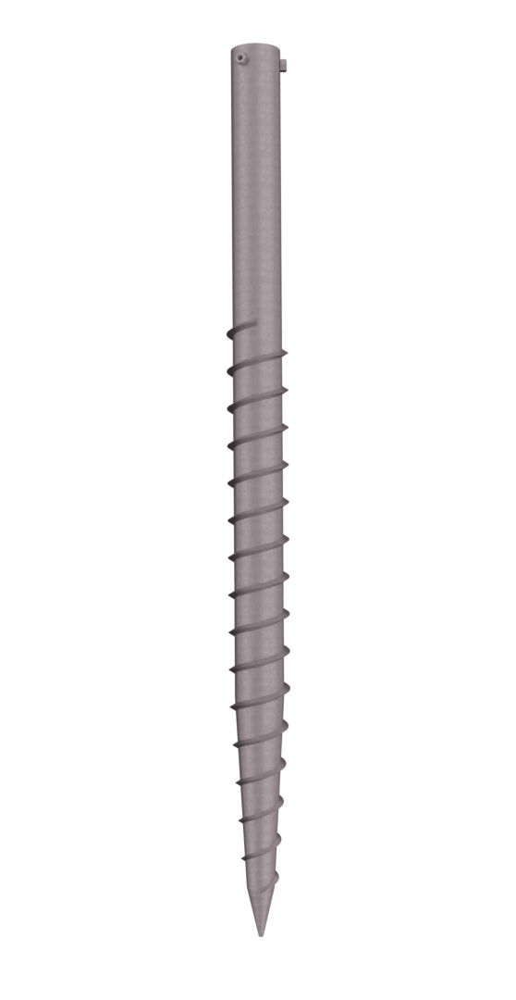
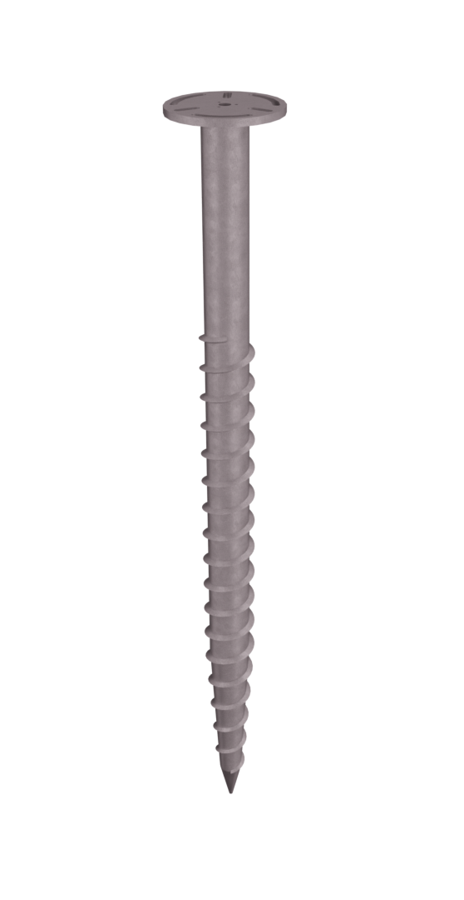
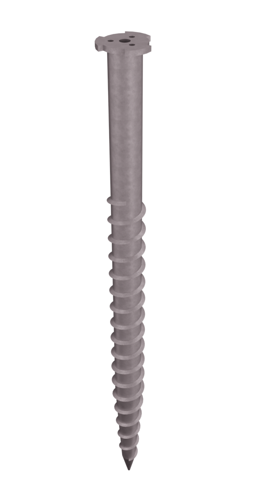
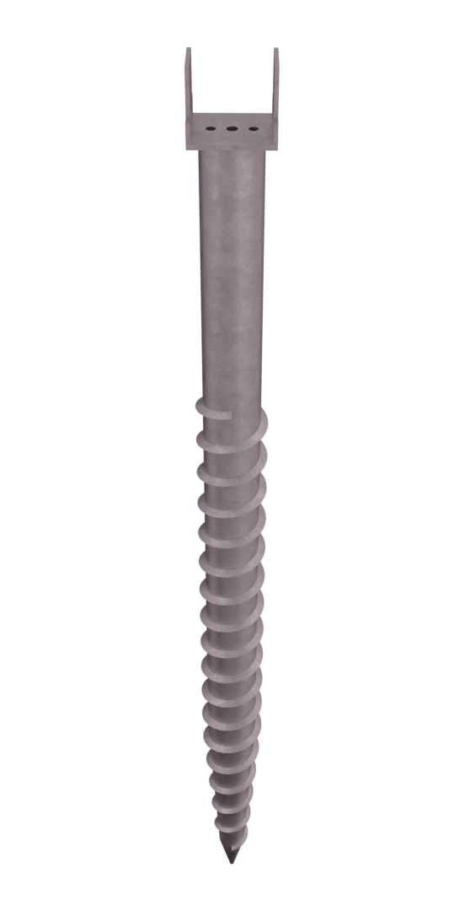

groundednz.co.nz
Groundscrew Foundations for the Kiwi Pro
(under construction)
   
If you landed on this page, you may be wondering about or looking for groundscrews.
Our website is under construction,
but we can already help.
We have groundscrews and installation equipment available.
If you are considering installing yourself, call us today!
We supply. We train you (It is easier than you think). We help you with your first job!
Start making money right away: install groundscrews for your own jobs or for others.
If you want to hire us for a full service installation, we certainly can do the job.
No digging
No concrete
No waiting
No damage
Contact us today at
027 488 9114
TL@GroundedNZ.co.nz